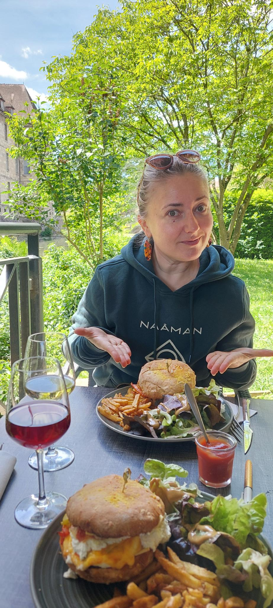

Qui suis‑je ?
J'aime partager mes découvertes culinaires — des brunchs confortables aux pizzerias de quartier, en passant par des restaurants qui proposent de vraies options VG. Ici tu trouveras des adresses testées et adorées, des petites histoires avec les restaurateurs, et des conseils pour choisir un lieu baby‑friendly ou végétarien.
Mon objectif : te donner envie de voyager, de goûter et de rencontrer.